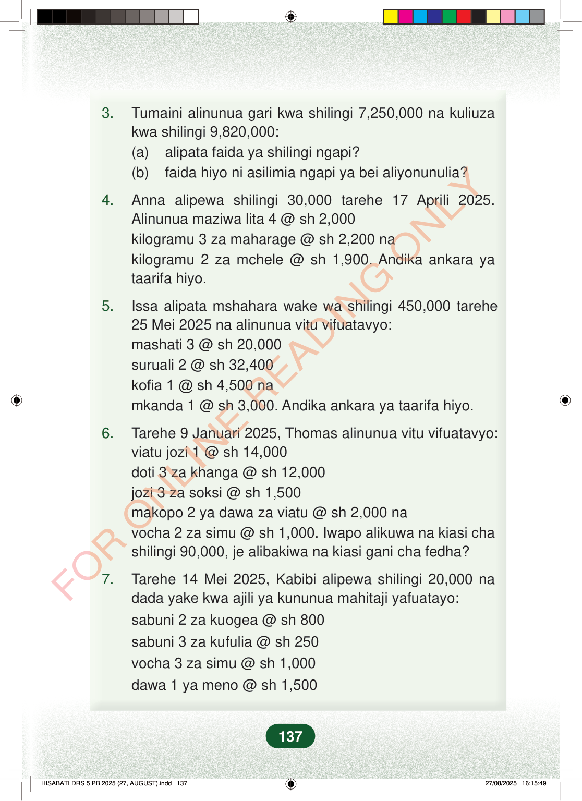

3.Tumaini alinunua gari kwa shilingi 7,250,000 na kuliuzakwa shilingi 9,820,000:(a)alipata faida ya shilingi ngapi?(b)faida hiyo ni asilimia ngapi ya bei aliyonunulia?4.Anna alipewa shilingi 30,000 tarehe 17 Aprili 2025.Alinunua maziwa lita 4 @ sh 2,000kilogramu 3 za maharage @ sh 2,200 nakilogramu 2 za mchele @ sh 1,900. Andika ankara yataarifa hiyo.5.Issa alipata mshahara wake wa shilingi 450,000 tarehe25 Mei 2025 na alinunua vitu vifuatavyo:mashati 3 @ sh 20,000suruali 2 @ sh 32,400kofia 1 @ sh 4,500 namkanda 1 @ sh 3,000. Andika ankara ya taarifa hiyo.6.Tarehe 9 Januari 2025, Thomas alinunua vitu vifuatavyo:viatu jozi 1 @ sh 14,000doti 3 za khanga @ sh 12,000jozi 3 za soksi @ sh 1,500makopo 2 ya dawa za viatu @ sh 2,000 navocha 2 za simu @ sh 1,000. Iwapo alikuwa na kiasi chashilingi 90,000, je alibakiwa na kiasi gani cha fedha?7.Tarehe 14 Mei 2025, Kabibi alipewa shilingi 20,000 nadada yake kwa ajili ya kununua mahitaji yafuatayo:sabuni 2 za kuogea @ sh 800sabuni 3 za kufulia @ sh 250vocha 3 za simu @ sh 1,000dawa 1 ya meno @ sh 1,500137
3. Tumaini alinunua gari kwa shilingi 7,250,000 na kuliuza kwa shilingi 9,820,000: (a) alipata faida ya shilingi ngapi? (b) faida hiyo ni asilimia ngapi ya bei aliyonunulia?
4. Anna alipewa shilingi 30,000 tarehe 17 Aprili 2025. Alinunua maziwa lita 4 @ sh 2,000 kilogramu 3 za maharage @ sh 2,200 na kilogramu 2 za mchele @ sh 1,900. Andika ankara ya taarifa hiyo.
5. Issa alipata mshahara wake wa shilingi 450,000 tarehe 25 Mei 2025 na alinunua vitu vifuatavyo: mashati 3 @ sh 20,000 suruali 2 @ sh 32,400 kofia 1 @ sh 4,500 na mkanda 1 @ sh 3,000. Andika ankara ya taarifa hiyo.
6. Tarehe 9 Januari 2025, Thomas alinunua vitu vifuatavyo: viatu jozi 1 @ sh 14,000 doti 3 za khanga @ sh 12,000 jozi 3 za soksi @ sh 1,500 makopo 2 ya dawa za viatu @ sh 2,000 na vocha 2 za simu @ sh 1,000. Iwapo alikuwa na kiasi cha shilingi 90,000, je alibakiwa na kiasi gani cha fedha?
7. Tarehe 14 Mei 2025, Kabibi alipewa shilingi 20,000 na dada yake kwa ajili ya kununua mahitaji yafuatayo: sabuni 2 za kuogea @ sh 800 sabuni 3 za kufulia @ sh 250 vocha 3 za simu @ sh 1,000 dawa 1 ya meno @ sh 1,500
137
3.Tumaini alinunua gari kwa shilingi 7,250,000 na kuliuza kwa shilingi 9,820,000:(a) alipata faida ya shilingi ngapi?(b) faida hiyo ni asilimia ngapi ya bei aliyonunulia?4.Anna alipewa shilingi 30,000 tarehe 17 Aprili 2025.Alinunua maziwa lita 4 @ sh 2,000kilogramu 3 za maharage @ sh 2,200 nakilogramu 2 za mchele @ sh 1,900.Andika ankara ya taarifa hiyo.5.Issa alipata mshahara wake wa shilingi 450,000 tarehe 25 Mei 2025 na alinunua vitu vifuatavyo:mashati 3 @ sh 20,000suruali 2 @ sh 32,400kofia 1 @ sh 4,500 namkanda 1 @ sh 3,000.Andika ankara ya taarifa hiyo.6.Tarehe 9 Januari 2025, Thomas alinunua vitu vifuatavyo:viatu jozi 1 @ sh 14,000doti 3 za khanga @ sh 12,000jozi 3 za soksi @ sh 1,500makopo 2 ya dawa za viatu @ sh 2,000 navocha 2 za simu @ sh 1,000.Iwapo alikuwa na kiasi cha shilingi 90,000, je alibakiwa na kiasi gani cha fedha?7.Tarehe 14 Mei 2025, Kabibi alipewa shilingi 20,000 na dada yake kwa ajili ya kununua mahitaji yafuatayo:sabuni 2 za kuogea @ sh 800sabuni 3 za kufulia @ sh 250vocha 3 za simu @ sh 1,000dawa 1 ya meno @ sh 1,500